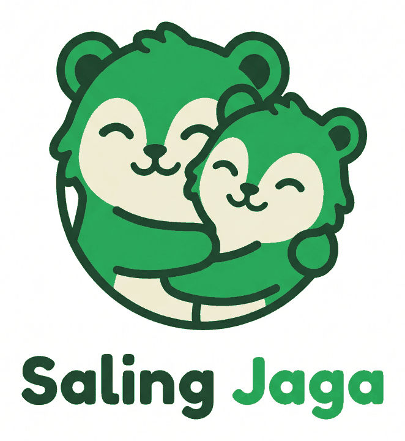

Tetap terhubung saat sinyal hilang.
Saling Jaga menghubungkan HP Android secara langsung, tanpa internet, tanpa SIM, dan tanpa router. Bicara, kirim pesan, bagikan lokasi, dan kirim SOS ke rombongan Anda saat bencana atau di alam.
Android 6.0 ke atas · sekitar 200 KB · gratis untuk warga · kode terbuka (AGPL-3.0)


Saat paling dibutuhkan, sinyal justru hilang
Gempa, banjir, dan longsor sering merusak BTS dan listrik. Di gunung, hutan, dan laut, sinyal memang tidak ada. Padahal di saat itulah orang perlu tahu: semua aman? Siapa yang butuh bantuan? Di mana mereka?
Semua yang dibutuhkan rombongan
Dirancang untuk kondisi darurat: tombol besar, sedikit langkah, dan tetap jalan saat layar mati.
Tahan untuk bicara
Walkie-talkie ke seluruh anggota grup. Nama dan foto pembicara muncul di layar.
Mode telepon
Suara dua arah terus-menerus dengan peredam gema dan derau bawaan HP.
Chat dan pengumuman
Pesan teks biasa, plus pengumuman kartu kuning yang berbunyi di semua HP untuk info titik kumpul.
SOS
Alarm keras dan getar di semua HP, lengkap dengan jarak dan arah ke pengirim, misalnya “259 m ke arah barat laut”.
Kompas anggota
Radar yang menunjukkan posisi tiap anggota sesuai arah aslinya. GPS tetap bekerja tanpa internet.
Status dan baterai
Aman, butuh bantuan, atau terluka. Tampil di bawah foto tiap anggota bersama level baterai.
Peringatan anggota terputus
Kalau ada HP keluar jangkauan atau mati, semua anggota tahu dalam sekitar 10 detik.
Jalan saat layar mati
SOS, pesan, dan peringatan tetap masuk sebagai notifikasi di layar kunci.
Lokasi bisa dimatikan
Tombol Bagikan lokasi di menu profil. Saat dimatikan, GPS ikut berhenti supaya hemat baterai.
Tampilan aplikasi
Dirender langsung dari kode aplikasi. Nama dan pesan di dalamnya hanya contoh.


Cara instal di HP
Saling Jaga belum ada di Play Store, jadi dipasang langsung dari file APK. Lakukan sebelum bencana atau sebelum berangkat, selagi masih ada internet.
- Buka halaman ini di HP Android, lalu ketuk Unduh APK.
- Kalau browser memperingatkan file berbahaya, pilih Tetap unduh. Peringatan ini muncul untuk semua APK dari luar Play Store.
- Buka file saling-jaga.apk dari notifikasi unduhan atau aplikasi File.
- Jika muncul “Instal aplikasi tidak dikenal”, ketuk Setelan, aktifkan Izinkan dari sumber ini, lalu kembali.
- Ketuk Instal. Jika Play Protect bertanya, pilih Instal saja atau Instal tanpa memindai.
- Buka Saling Jaga, isi nama, dan izinkan Lokasi/Perangkat sekitar, Mikrofon, dan Notifikasi.
Bagikan ke anggota rombongan tanpa internet: kirim file APK lewat Quick Share / Nearby Share, Bluetooth, atau kabel data. Ukurannya hanya sekitar 200 KB.
Cara pakai
Dari HP terpasang sampai bisa saling bicara, kira-kira satu menit.
- Nyalakan Wi‑Fi dan Lokasi di setiap HP. Wi‑Fi tidak perlu tersambung ke jaringan mana pun, dan tidak perlu hotspot.
- Buka aplikasi di semua HP, lalu ketuk ikon cari.
- Ketuk nama HP teman. HP teman menekan Terima pada undangan yang muncul.
- Setelah status hijau Terhubung, tahan tombol mikrofon untuk bicara, atau ketuk telepon untuk mode panggilan.
- Pakai chip SOS, Kompas, Status, dan Pengumuman di atas chat sesuai kebutuhan.
Jangkauan Wi‑Fi Direct sekitar 50–100 m di area terbuka. Kunci GPS pertama tanpa internet bisa butuh 1–3 menit di tempat terbuka.
Cara kerja
Tanpa server, tanpa cloud. Satu HP otomatis menjadi pemilik grup, dan HP lain tersambung ke HP itu lewat Wi‑Fi Direct.
Pemilik grup meneruskan suara, pesan, status, dan SOS ke semua anggota. Anggota yang baru bergabung langsung menerima daftar anggota, status terakhir, dan SOS yang masih aktif.
Setiap HP mengirim sinyal hidup tiap 3 detik. HP yang diam lebih dari 10 detik dianggap terputus, dan semua anggota diberi tahu.
Lalu lintas di udara terenkripsi WPA2 milik Wi‑Fi Direct. Pemilik grup menolak pesan yang mengaku dari anggota lain, jadi tidak ada SOS palsu atas nama orang lain.
Satu grup bisa berisi hingga 16 HP.
Tanya jawab
Apakah benar-benar tidak butuh internet atau pulsa?
Benar. Data seluler boleh mati dan HP boleh tanpa kartu SIM. Yang perlu menyala hanya Wi‑Fi dan Lokasi. Internet hanya dibutuhkan sekali, saat mengunduh APK.
Kalau Wi‑Fi saya sedang tersambung ke jaringan rumah atau kantor, apakah tetap bisa?
Bisa. Wi‑Fi Direct berjalan berdampingan dengan koneksi Wi‑Fi biasa di kebanyakan HP. Orang lain di jaringan yang sama tidak bisa masuk ke grup tanpa diundang.
Seberapa jauh jangkauannya?
Sekitar 50–100 m di area terbuka, lebih pendek di dalam gedung. Untuk jarak kilometer, kami sedang menyiapkan integrasi dengan perangkat radio LoRa.
Apakah aman? Siapa yang bisa mendengar percakapan?
Hanya anggota yang Anda terima ke grup. Sinyal di udara terenkripsi WPA2. Enkripsi ujung ke ujung dan identitas terverifikasi sedang dikembangkan.
Kenapa HP memperingatkan saat memasang APK?
Android memperingatkan setiap aplikasi yang tidak berasal dari Play Store. Kode Saling Jaga terbuka di GitHub dan bisa diperiksa siapa pun. Versi Play Store menyusul setelah uji lapangan.
Apakah sudah siap dipakai saat bencana sungguhan?
Saling Jaga masih versi awal (MVP). Semua fitur sudah ter-build dan protokolnya teruji otomatis, tapi belum diuji lapangan di banyak merek HP. Coba dulu bersama keluarga atau rombongan, dan kirim masukan lewat GitHub.
Gratis untuk warga, siap untuk tim
Aplikasi warga gratis selamanya dan kodenya terbuka. Edisi untuk tim dan institusi membiayai pengembangannya.
Warga
- Semua fitur aplikasi di halaman ini
- Kode terbuka AGPL-3.0
- Tanpa iklan, tanpa akun
Tim / Posko
- Dasbor koordinator
- Peta offline dan absen massal
- Laporan pasca-kejadian, kanal terenkripsi
Institusi
- BPBD, SAR, PMI, sekolah, perusahaan
- Lisensi, kustomisasi, pelatihan
- Paket perangkat LoRa untuk posko

Pasang sekarang, sebelum dibutuhkan
Ajak keluarga dan rombongan memasangnya juga. Aplikasi ini hanya berguna kalau HP di sekitar Anda juga punya.